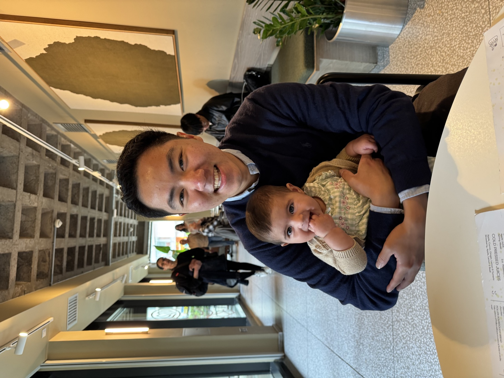

Keep the source within reach.
Every story is checked against an authoritative source and links back to where it came from.
About

Every story is checked against an authoritative source and links back to where it came from.
Clear pages, gentle colours, and simpler reads.
Stories, letters, people, and themes each have their own place, so it is easy to find your way back.

From Marcus
Inspired by the joy of storytime with Clara, I hope these stories become easier for everyone to read, revisit, and share. May they be a small source of strength and courage whenever they are needed.
Next room
They will have the same quiet reading experience as the stories, with sources kept close and room to return over time.
Support
Get in touch with Marcus at marcuscheong@icloud.com, or schedule a call. It would be lovely to meet, hear your thoughts, and share what is coming next.
Return to stories